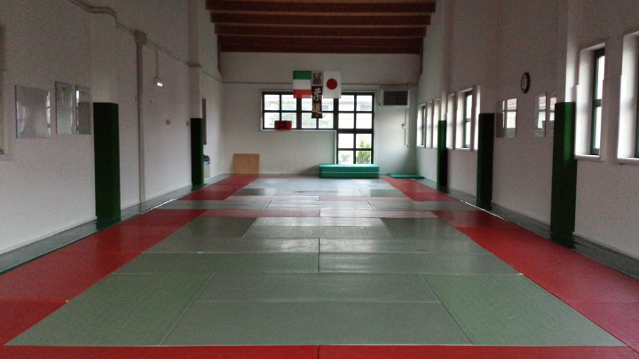
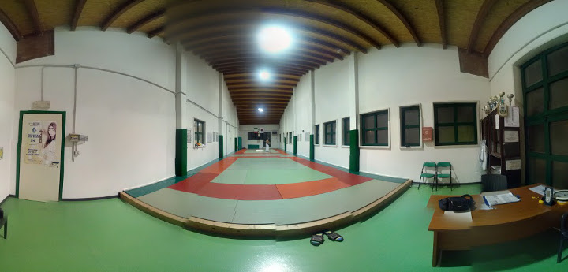
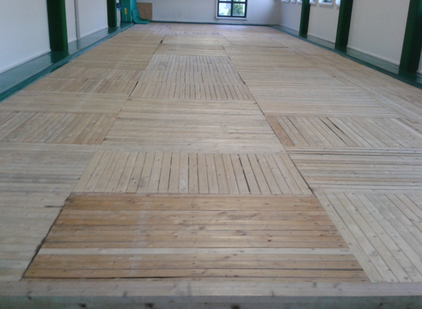
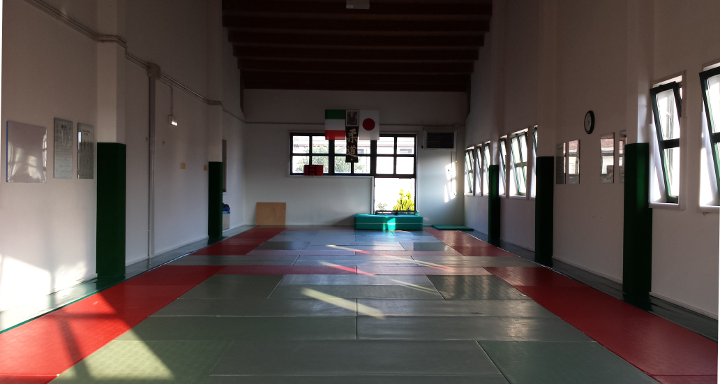
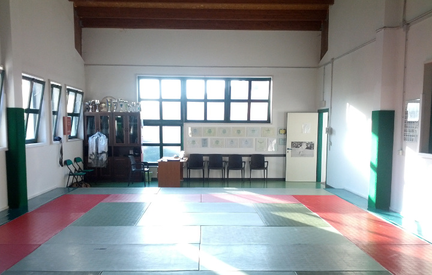

Il Dojo: Dov'è nata l'idea e chi sono i creatori
Paolino Tarocco, Maestro 5° Dan JUDO
Marco Bertolotto, Maestro 5° Dan JUDO
Thomas, Allenatore
Giovanni, Aspirante Allenatore

{kind=link}
{kind=link}
La passione per il judo dei nostri maestri, Paolino Tarocco e Marco Bertolotto, inizia molti anni fa proprio a Bovolone.
Paolino si accosta alla nostra arte marziale nel settembre del 1982; Marco inizia qualche anno più tardi, nel 1989. Ma il Dojo è lo stesso: si tratta della “mitica” palestra del maestro Sergio Bazzani, che da anni ormai, in Via Dante Alighieri, insegna questo sport a moltissimi ragazzi e ragazze.
E’ nella sua palestra che Paolino e Marco si preparano per sostenere l’esame per la cintura nera, conseguita da Paolino nel giugno 1989 e da Marco nel giugno 1996.
Con il passare del tempo, e la costante collaborazione con il loro primo mentore, inizia la passione per la scuola, soprattutto nei confronti dei più piccoli. Paolino ottiene nel giugno 1998 la qualifica di allenatore che lo abilita all’insegnamento, qualifica che anche Marco consegue nel 2000. E matura così nei due amici il desiderio di aprire una propria palestra.
Continua...
- Lo Staff

- Il Tatami

- Tutta la sala (foto costruita)

- Manutenzione

- Con il sole

- L'entrata

.jpg){kind=link}
{kind=link}
{kind=link}
{kind=link}